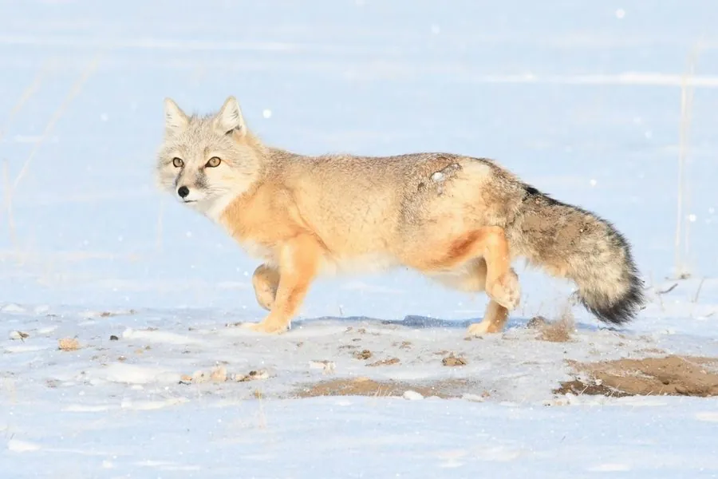

哺乳动物 · 动物界
沙狐 Vulpes corsac

中亚与蒙古草原的小型狐类，毛色沙黄、耳朵宽大，善挖洞而少自己掘洞，以鼠类和昆虫为食，奔跑速度快。
- 分类
- 门脊索动物门纲哺乳纲目食肉目科犬科属狐属
- 栖息环境
- 中亚、蒙古与中国北方的草原、半荒漠和干草原
- 地理分布
- 里海沿岸、中亚、蒙古及中国北方和东北的草原
- 保护级别
- IUCN 无危（LC）；中国国家二级保护动物
物种志
沙狐体长 0.45–0.65 米，尾长 0.19–0.3 米，体重 1.6–3.2 kg，体形比赤狐小。它的被毛为浅沙黄至灰褐色，腹部和四肢内侧偏白，尾毛蓬松；耳朵宽大而高，吻部较短，四肢细长，适合在开阔草地上奔跑。
沙狐分布于中亚、蒙古、中国北方和东北的草原、半荒漠和干草原，从里海沿岸到蒙古高原。它以鼠类为主食，也吃昆虫、鸟类、爬行动物、卵和果实，多在夜间和晨昏活动，白天躲藏在洞穴中；沙狐自己不擅长挖洞，常利用旱獭、黄鼠的废弃洞穴。沙狐结成家庭群或独居，冬季可结成小群活动，妊娠期约 50–60 天，每胎 2–6 仔。沙狐适应草原环境，种群总体稳定，中国将其列为国家二级保护动物。
形态与习性
- 食性鼠类为主，也吃昆虫、鸟类、爬行动物、卵和果实
- 体长0.45–0.65 m，尾长 0.19–0.3 m
- 体重1.6–3.2 kg
- 寿命野外约 3–6 年
- 繁殖妊娠期约 50–60 天，每胎 2–6 仔
- 洞穴多利用旱獭、黄鼠的废弃洞穴
- 活动节律夜间和晨昏活动
趣味知识
- 沙狐的耳朵宽大，能帮助它在草原上捕捉细微声响。
- 它自己不擅长挖洞，常占用旱獭或黄鼠的废弃洞穴。
- 沙狐以鼠类为主食，是草原上重要的鼠害控制者。
- 沙狐毛色沙黄，与干草原的环境十分协调。